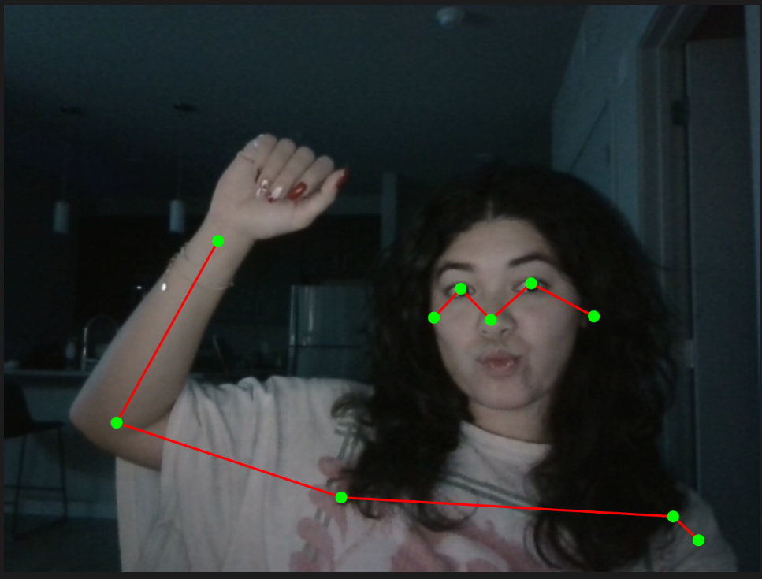

Once I saw the BodyPose Model I knew I wanted to do something around movement/dance. I did a little brainstorming and first though of things like Just Dance that map the dancers in a fun and surreal way.
My first thought was to duplicate your body pose and make some mini mes that dance around with you too. Since I don't expect all users to be standing fully or have their full body in frame, I decided to go with another idea.
The next thought I had was to use your body to draw. Differenty body segements may be different colors or erase at different speeds. Maybe they don't erase at all or the color depends on the speed of your body.
Here is what it looks like when we take the starter code for the BodyPose Model and then made sure to flip the screen to actually mirror what you're doing.
work in progress for sureee